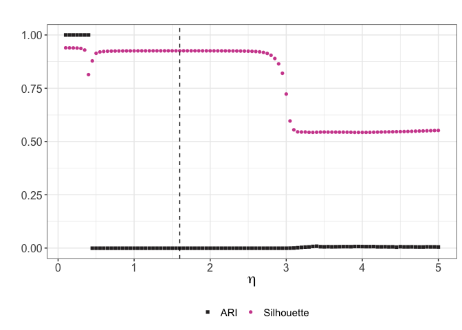
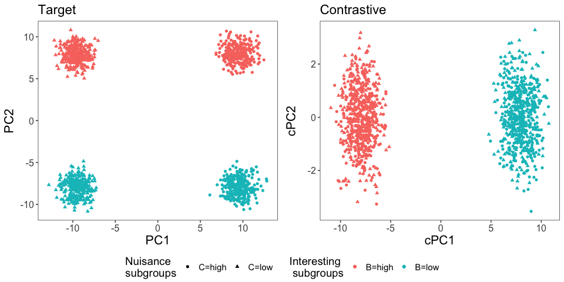
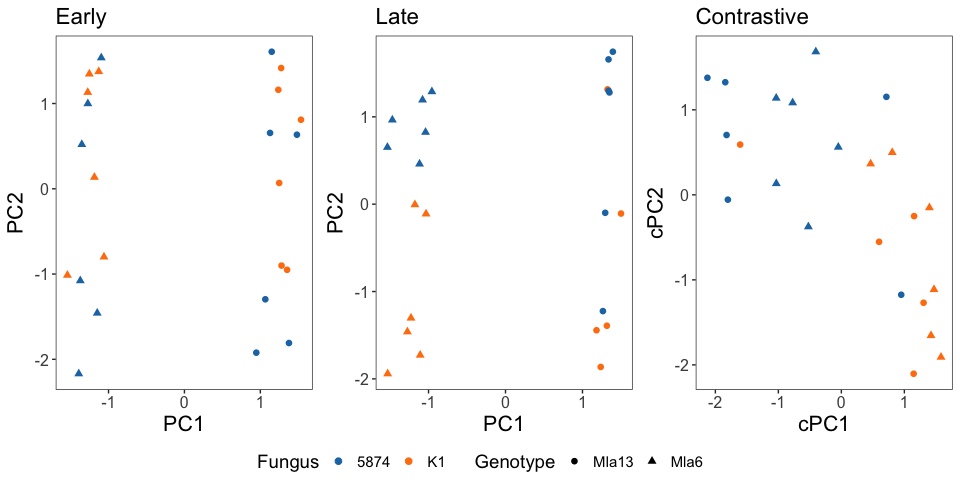
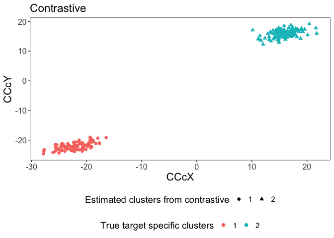
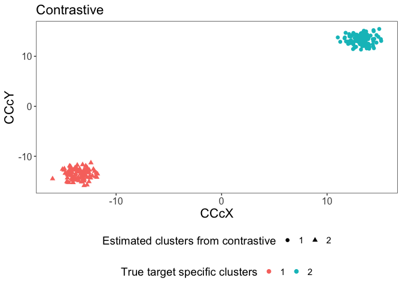

R package for contrastive spectral analysis.
Contact
yunhuiqistat@gmail.com (Yunhui Qi)
Installation
You can install the development version of ConSpec from GitHub with:
# install.packages("devtools")
devtools::install_github("yunhuiqistat/ConSpec")Website
Check the vignette at https://yunhuiqistat.github.io/ConSpec/.
Introduction
The goal of CEA is to conduct contrastive eigen analysis including contrastive principal component (cPCA) and its sparse version (scPCA), contrastive cross-covariance analysis (3CA) and its sparse version (3CA). (s)cPCA can be implemented by function cPCA. (s)3CA can be implemented by function cCCA.
cPCA
-
Input
-
Xtdata frame for target group, samples in rows, variables in columns. If PCA is applied to correlation matrix, Xt should be scaled and centered.
-
Xadata frame for ancillary group, samples in rows, variables in columns. If cPCA is applied to correlation matrix, Xc should also be scaled and centered.
-
eta_rangea vector containing candidate eta range to be tuning from.
-
plota logical quantity indicating whether plot the ARI(nuisance) and silhouette score.
-
sparse_trtparameter controlling the sparsity of target sparse PCA, if NULL, use cPCA, else use scPCA. For use of scPCA, if vector, refer sumabss in PMD.cv from package PMA, if single number, refer sumabs in PMD in package PMA.
-
sparse_ctstparameter controlling the sparsity of scPCA, if NULL, use cPCA, else use scPCA. For use of scPCA, if vector, refer sumabss in PMD.cv from package PMA, if single number, refer sumabs in PMD in package PMA.
-
num_compsif scPCA, specify the number of contrastive components that will be estimated by PMD, default is 20. -
km_clusternumber showing number of nuisance clusters defined from kmeans clustering on target PCA. -
ckm_clusternumber of interesting clusters defined from kmeans clustering on cPCA/scPCA.
-
-
Output
- A list containing selected value of
eta_opt, the vector of ARI(nuisance)nuisance_ARIand the vector of Silhouettesilhouette, and the ggplot objectp.
- A list containing selected value of
-
Input
-
Xtdata frame for target group, samples in rows, variables in columns. -
Xadata frame for ancillary group, samples in rows, variables in columns. -
etatuning parameter controlling how much ancillary variation should be contrasted off from the target variation. It can be theoeta_optfrom function eta_tuning(). -
sparse_ctstparameter controlling the sparsity of scPCA, if NULL, use cPCA, else use scPCA. For use of scPCA, if vector, refer sumabss in PMD.cv from package PMA, if single number, refer sumabs in PMD in package PMA.
-
sparse_trtparameter controlling the sparsity of target sparse PCA, if NULL, use cPCA, else use scPCA. For use of scPCA, if vector, refer sumabss in PMD.cv from package PMA, if single number, refer sumabs in PMD in package PMA.
-
sparse_ctrlparameter controlling the sparsity of ancillary sparse PCA, if NULL, use cPCA, else use scPCA. For use of scPCA, if vector, refer sumabss in PMD.cv from package PMA, if single number, refer sumabs in PMD in package PMA.
-
-
Output
- A list containing contrastive scores
cPCand loadingscU, target scoresPCtand loadingsUt, and ancillary scoresPCaand loadingsUa.
- A list containing contrastive scores
- We load the simulated data from the
data(intro), and useeta_tuning()to get optimal value of tuning parameter .
eta_range <- seq(0.1, 5, 0.05)
eta_opt <- eta_tuning_general(Xt = intro$cPCA$Xt, Xa = intro$cPCA$Xa, eta_range = eta_range, plot = TRUE, sparse_trt = NULL, sparse_ctst = NULL, num_comps = 20, km_cluster = 2, ckm_cluster = 2)$eta_opt
- We then input the data and the resulting value to cPCA.
# speccify sparsity parameters to be NULL for cPCA
cpca_res <- cPCA(Xt = intro$cPCA$Xt, Xa = intro$cPCA$Xa, eta = eta_opt, sparse_ctst = NULL, sparse_trt = NULL, sparse_ctrl = NULL)- We get the score plot of cPCA. In comparison, we also get the score plot of target PCA. Here, as in the paper, we have nuisance subgroup factor and interesting subgroup factor . In the score plot, we see the first target score is associated with the nuisance subgroups, while the first contrastive score is associated with the interesting subgroups. This validates the removal of nuisance effect and discovery of hidden subgroups by cPCA.
plot_data <- data.frame(cPC1 = cpca_res$cPC[,1], cPC2 = cpca_res$cPC[,2],
PC1 = cpca_res$PCt[,1], PC2 = cpca_res$PCt[,2],
intro$cPCA$covariates_t)
cP <- ggplot(plot_data)+
geom_point(aes(x = cPC1, y = cPC2, color = B, shape = C))+
labs(title = "Contrastive", color = "Interesting \n subgroups", shape = "Nuisance \nsubgroups")+
theme_bw()+
theme(panel.grid = element_blank(),
text = element_text(size = 14), # Adjust text size
axis.title = element_text(size = 16), # Adjust axis title size
axis.text = element_text(size = 12))
Pt <- ggplot(plot_data)+
geom_point(aes(x=PC1, y=PC2, color= B, shape = C), show.legend = FALSE)+
labs(title = "Target", color = "Interesting \n subgroups", shape = "Nuisance \nsubgroups")+
theme_bw()+
theme(panel.grid = element_blank(),
text = element_text(size = 14), # Adjust text size
axis.title = element_text(size = 16), # Adjust axis title size
axis.text = element_text(size = 12))
p_score <- ggarrange(Pt,cP, nrow = 1, common.legend = TRUE, legend = "bottom", align = "v")
print(p_score)
scPCA
To illustrate the use of function cPCA() for sparse cPCA, we use the barley expression data example. For details of data processing and references, please refer to data(barley).
- We load the processed data from the
data(intro), and use assigned , we also specify the sparsity parameters to be 0.3.
set.seed(111)
# specify the sparsity parameters for scPCA
scPCA_res <- cPCA(Xt = intro$scPCA$Xt, Xa = intro$scPCA$Xa, eta = 1, sparse_ctst = 0.3, sparse_trt = 0.3, sparse_ctrl = 0.3)- We get the score plot of scPCA. In comparison, we also get the score plot of target PCA. As seen from the figure, Genotype effect is removed by scPCA, and the fungus subgroups is revealed by the first scPCA score.
PCt <- scPCA_res$PCt
PCa <- scPCA_res$PCa
cPC <- scPCA_res$cPC
Ut <- scPCA_res$Ut
Ua <- scPCA_res$Ua
cU <- scPCA_res$cU
plot_data_t <- data.frame(cPC1 = cPC[,1], cPC2 = cPC[,2],
PC1 = PCt[,1], PC2 = PCt[,2],
Genotype = intro$scPCA$covariates_t$Genotype,
Isolate = intro$scPCA$covariates_t$Isolate,
Time_bi = factor(intro$scPCA$covariates_t$Time_bi, levels = c("Early","Late")))
plot_data_a <- data.frame(PC1 = PCa[,1], PC2 = PCa[,2],
Genotype = intro$scPCA$covariates_a$Genotype,
Isolate = intro$scPCA$covariates_a$Isolate,
Time = intro$scPCA$covariates_a$Time,
Time_bi = factor(intro$scPCA$covariates_a$Time_bi, levels = c("Early","Late")))
cP <- ggplot(plot_data_t)+
geom_point(aes(x = cPC1, y = cPC2, color = Isolate, shape = Genotype), size = 2)+
theme_bw()+
labs(title = "Contrastive", color = "Fungus")+
theme(panel.grid = element_blank(),
text = element_text(size = 14), # Adjust text size
axis.title = element_text(size = 16), # Adjust axis title size
axis.text = element_text(size = 12),
legend.position = "right")+
scale_color_d3()
Pt <- ggplot(plot_data_t)+
geom_point(aes(x=PC1, y=PC2, color= Isolate, shape = Genotype ), size = 2)+
labs(title = "Late", color = "Fungus")+
theme_bw()+
theme(panel.grid = element_blank(),
text = element_text(size = 14), # Adjust text size
axis.title = element_text(size = 16), # Adjust axis title size
axis.text = element_text(size = 12),
legend.position = "right")+
scale_color_d3()
Pa <- ggplot(plot_data_a)+
geom_point(aes(x=PC1, y=PC2, color= Isolate, shape = Genotype), size = 2)+
labs(title = "Early", color = "Fungus")+
theme_bw()+
theme(panel.grid = element_blank(),
text = element_text(size = 14), # Adjust text size
axis.title = element_text(size = 16), # Adjust axis title size
axis.text = element_text(size = 12),
legend.position = "right")+
scale_color_d3()
p_score <- ggarrange(Pa, Pt, cP, nrow=1, ncol=3, common.legend = TRUE, legend = "bottom")
print(p_score)
3CA
-
Input
-
Xtdata frame for one data type in target group, samples in rows, variables in columns. To conduct analysis based on cross corrlation matrix, each feature should be centered and standardized.
-
Xadata frame for one data type in ancillary group, samples in rows, variables in columns. To conduct analysis based on cross corrlation matrix, each feature should be centered and standardized.
-
Ytdata frame for another data type in target group, samples in rows, variables in columns. To conduct analysis based on cross corrlation matrix, each feature should be centered and standardized.
-
Yadata frame for another data type in ancillary group, samples in rows, variables in columns. To conduct analysis based on cross corrlation matrix, each feature should be centered and standardized.
-
etatuning parameter controlling how much ancillary variation should be contrasted off from the target variation. If NULL, the estimated eta introduced in paper will be used. -
sparse_ctstparameter controlling the sparsity of s3CA, if NULL, use 3CA, else use s3CA. For use of s3CA, if vector, refer sumabss in PMD.cv from package PMA, if single number, refer sumabs in PMD in package PMA.
-
sparse_trtparameter controlling the sparsity of target sparse cross covariance/correlation analysis, if NULL, use cross covariance/correlation analysis, else use sparse cross covariance/correlation analysis. For use of sparse version, if vector, refer sumabss in PMD.cv from package PMA, if single number, refer sumabs in PMD in package PMA.
-
sparse_ctrlparameter controlling the sparsity of ancillary sparse cross covariance/correlation analysis, if NULL, use cross covariance/correlation analysis, else use sparse cross covariance/correlation analysis. For use of sparse version, if vector, refer sumabss in PMD.cv from package PMA, if single number, refer sumabs in PMD in package PMA.
-
-
Output
- A list containing contrastive SVD object
CCA_ctstincluding singular valuesd, loadings for Xu, loadings for Yv; target only SVD objectCCA_trtand ancillary only SVD objectCCA_ctrl.
- A list containing contrastive SVD object
- We load the simulated data from the
data(intro), and get the first pair of score from 3CA, then we cluster the scores using kmeans clustreing with two clusters. We would like to check if these scores recover the target specific clusters.
res_3CA <- cCCA(Xa = intro$cCCA$Xa, Ya = intro$cCCA$Ya,
Xt = intro$cCCA$Xt, Yt = intro$cCCA$Yt, eta = NULL,
sparse_ctst = NULL, sparse_trt = NULL, sparse_ctrl = NULL)
#>
#> optimal eta is 2.36543920954191
df_score <- data.frame(CCcX=intro$cCCA$Xt %*% res_3CA$CCA_ctst$u[,1], CCcY=intro$cCCA$Yt %*% res_3CA$CCA_ctst$v[,1], labels = intro$cCCA$labels)
clustering <- spec_clust(df_score[,1:2], k = 2, group = intro$cCCA$labels)
df_score$Clusters <- clustering$cluster
ggplot(df_score)+geom_point(aes(x = CCcX, y = CCcY, color= factor(labels), shape = factor(Clusters)), size = 2)+
labs(title = "Contrastive", color = "True target specific clusters", shape = "Estimated clusters from contrastive")+
theme_bw()+
guides(
shape = guide_legend(
nrow = 1,
byrow = TRUE,
order = 1
),
color = guide_legend(
nrow = 1,
byrow = TRUE,
order = 2
)
) +
theme(
panel.grid = element_blank(),
text = element_text(size = 14), # Adjust text size
axis.title = element_text(size = 16), # Adjust axis title size
axis.text = element_text(size = 12),
legend.position = "bottom",
legend.box = "vertical",
legend.box.just = "center"
)
cat("ARI for target specific clusters:", clustering$ari, "\n")
#> ARI for target specific clusters: 1s3CA
We load the simulated data from the data(intro), and get the first pair of score from s3CA, then we cluster the scores using kmeans clustreing with two clusters. We would like to check if these scores recover the target specific clusters.
s3CA_res <- cCCA(Xa = intro$s3CA$Xa, Ya = intro$s3CA$Ya,
Xt = intro$s3CA$Xt, Yt = intro$s3CA$Yt, eta = NULL,
sparse_ctst = sqrt(20/ncol(intro$s3CA$Xt)),
sparse_trt = sqrt(20/ncol(intro$s3CA$Xt)),
sparse_ctrl = sqrt(20/ncol(intro$s3CA$Xa)))
#>
#> optimal eta is 2.3777269799218
df_score <- data.frame(CCcX=intro$s3CA$Xt %*% s3CA_res$CCA_ctst$u[,1], CCcY=intro$s3CA$Yt %*% s3CA_res$CCA_ctst$v[,1], labels = intro$s3CA$labels)
clustering <- spec_clust(df_score[,1:2], k = 2, group = intro$s3CA$labels)
df_score$Clusters <- clustering$cluster
ggplot(df_score)+geom_point(aes(x = CCcX, y = CCcY, color= factor(labels), shape = factor(Clusters)), size = 2)+
labs(title = "Contrastive", color = "True target specific clusters", shape = "Estimated clusters from contrastive")+
theme_bw()+
guides(
shape = guide_legend(
nrow = 1,
byrow = TRUE,
order = 1
),
color = guide_legend(
nrow = 1,
byrow = TRUE,
order = 2
)
) +
theme(
panel.grid = element_blank(),
text = element_text(size = 14), # Adjust text size
axis.title = element_text(size = 16), # Adjust axis title size
axis.text = element_text(size = 12),
legend.position = "bottom",
legend.box = "vertical",
legend.box.just = "center"
)
cat("ARI for target specific clusters:", clustering$ari, "\n")
#> ARI for target specific clusters: 1